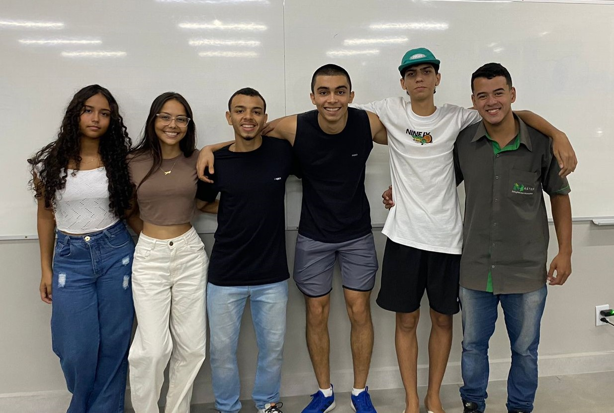
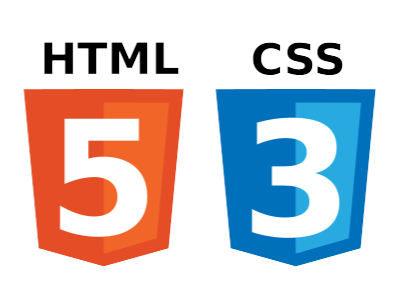

Somos um grupo de jovens graduando em ciência da computação no UNIFAGOC. Atualmente temos nosso grupo que é entitulado como "Trem Bala da Colina" tendo inspiração no Clube de Regatas Vasco da Gama. Nossa equipe é composta por um total de seis (6) pessoas, sendo: Gabriel Gregório, João Pedro Vidal, Joicy Mendes, Raphaela Meireles e Renato Miranda.
Nesse minicurso você contará com conceitos básicos para poder construir uma carreira como desenvolvedor(a)! Eai quer aprender como criar um site do zero de forma totalmente gratuita? Pressione “iniciar” e bons estudos!
O conteúdo será sobre aulas teóricas com resumos objetivos e claros e videoaulas mostrando na prática como usar programas de codificação (VS Code ou Intellij); Temos como objetivo introduzir nosso alunos ao início de um grande passo para a programação e codificação de códigos fontes.
